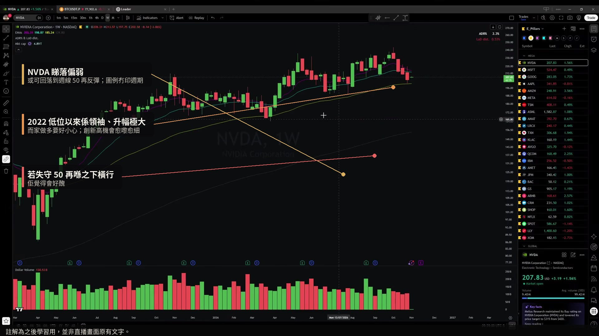

概要
領袖股延伸過後，創新高機會愈嚟愈細
1:26 前後先提到今日有裂口向上，睇佢哋點同下降均線反應；1:27:01 把焦點放到 NVIDIA，覺得睇落有少少太弱。或者會回落到週線 50，再反彈返上頂，但自從 2022 低位以來 NVIDIA 一直係領袖、升幅超過 2,000%，所以而家在呢度做多要非常小心。唔等於一定跌破，但再推高創新高嘅機會愈嚟愈細。若然失守 50 EMA，再在 50 之下整一個區間，佢覺得會好醜。
圖一 · 主圖
NVDA：或可回落到週線 50；失守會好醜
直播 1:27:20

原話
The one stock that I'm, they're really looking bad is Nvidia. I think this looks a little bit too weak. It could, I don't know, it could like do something like this: pull back into the weekly 50 and then gets another rally back to the top. But given that, like since the low of this 2022, Nvidia has been a leader and is up like more than 2,000% since. I'll be very careful for like to long Nvidia like right here. It doesn't mean that it's going, it has to break down, but I think the odds of getting another push to make it like an all-time high will be smaller and smaller. And if somehow Nvidia is losing the 50 EMA and then starts building a like a range or like under the 50 EMA, that will be really ugly.
有一隻睇落真係好弱嘅，就係 Nvidia。我覺得有少少太弱。或者會咁行：回落到週線 50，然後再反彈返上頂。但由 2022 呢個低位以來，Nvidia 一直係領袖，升幅超過 2,000%。所以而家在呢度做多，我會非常小心。唔等於一定要跌破，但再推高去創新高嘅機會，我覺得愈嚟愈細。若然 Nvidia 失守 50 EMA，然後開始在 50 之下整一個區間，嗰個會好醜。
點樣讀
佢保留兩種可能：回落到 50 再反彈，或者失守 50 再在之下橫行。重點係而家做多要非常小心，因為已經係極度延伸過嘅領袖。
2,000% 係口中約數。圖例冇印 50，註解只指較慢週線均線嘅位置。1:26 嘅裂口向上只係帶過，唔把 SPCX、VRT 等靜音翻圖單獨成科。
附註
注意事項
- 1:22–1:23 有一段淡倉偏在弱勢平、做多或會跟 9／21 嘅問答，當時冇對應走圖，唔單獨成科。1:38–1:46 風險同倉位增長問答同樣冇圖，唔獨立成科。
- 圖例冇印均線週期。畫面睇唔到成交價。
免責聲明：呢份係教育拆解，唔係投資建議，亦唔好當作買賣指示。